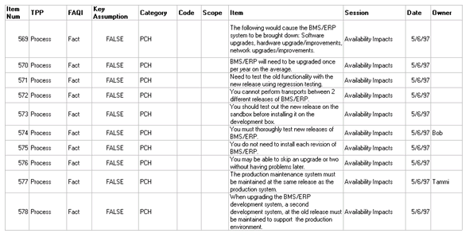
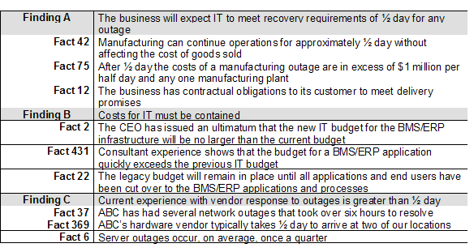

| Guideline: Performing Infrastructure Gap Analysis |
 |
|
| Related Elements |
|---|
The Infrastructure Gap Analysis identifies the variance (gaps) between the IT organization's existing technology and application portfolios, the IT processes, and the IT skill sets and organization to those required to implement and support the new environment. The analysis includes the conclusions derived after a data gathering process. These conclusions quantify the impact of the transition required to migrate from the existing, "current", IT infrastructure to the desired, "future", IT infrastructure. The Infrastructure Gap Analysis Artifact documents the work done to date, what was found during data gathering (high level requirements and key assumptions), the difference between the current and future infrastructure and the next steps needed to deal with the gaps. StepsPerform Gap Analysis Develop the differences between the current infrastructure and the future infrastructure that must be addressed through planning.
Create conclusions/gaps from findings
If the client does not have sufficient documentation to describe the existing infrastructure, the conclusions/gaps cannot be created. Interviews with people knowledgeable about the current infrastructure will be required, along with consultants knowledgeable about infrastructure requirements at similar clients. Combining this information can provide a generic list of gaps to be planned for.  Figure 1: Example of FAQI Worksheet
Figure 2: Example of EUFG Worksheet  Figure 3: Example of Facts to Findings Worksheet
Create a report for review with the planning engagement executive sponsor to gain approval to proceed. An example report might contain:
Client review/revision of "strawman" report:
|

| © Copyright IBM Corp. 1987, 2012 All Rights Reserved Property of IBM These materials are intended only for use as part of an IBM engagement |